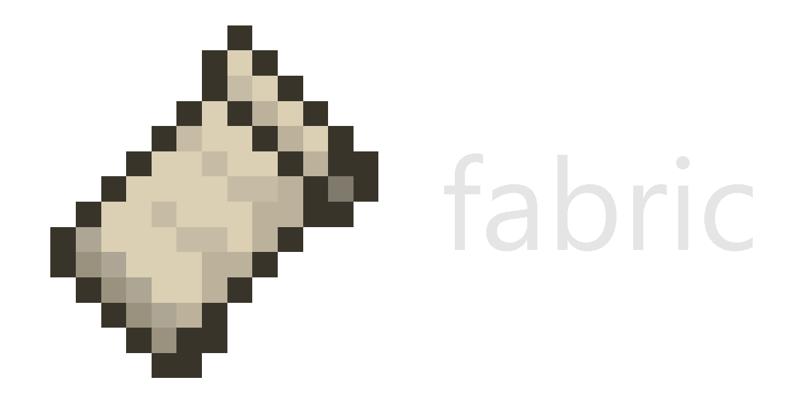

Welcome
What is Minecraft Modding?
Minecraft Modding is the act of modifying and making mods for Minecraft. Minecraft Modding is not
something that should be used for making things such as hacked clients, whilst they are still
technically modding, they are modifying the client to give users an unfair advantage, and these
hacks are not supported by Mojang, or most real modders. In contrary with this lack of hacked client
support however, Minecraft Modding with forge or fabric is fully endorsed by Mojang. If you are in
doubt, you can always check Mojang's End User License Agreement (EULA for short) which specifies
modding is ok as long as it does not redistribute their software or being intended for hacks,
griefing or modded clients.
Modding can include Plugins, Forge Mods, Fabric Mods and to some extent, depending on who
you speak to, datapacks. Obviously this is only on the Java Edition side of things. If you head over
to Minecraft Bedrock there is the system of add-ons.
If you want to find some information about the history of Minecraft Modding, I recommend
reading this great blog by Aaron Mills: here.
Where to start?
The first thing you need to know about modding, is that Minecraft Java Edition is written in Java. Whilst this sounds fairly obvious, lots of people think Minecraft is written in Javascript. And as the saying goes, Java is as similar to Javascript as Car is to Carpet. In other words, Java is nothing like Javascript.
Once you have wrapped your brain around that hurdle, you need to make sure you learn Java. Once again, this may sound fairly obvious, as you need to know how to code the language that the game you're coding for is written in (unless that game has made a system specifically for modding that uses a different language - this is not Minecraft however). So you need to ensure that you at least know the basics of Java.
If you are one of the people coming to modding thinking that it is a great way to learn Java, I'm here to disappoint you, and tell you that would be wrong and would be a very bad mistake to make. I can say from experience, that it is not a good idea to come into modding with little to know Java experience. Both Minecraft and any Modding API will use beginner, intermediate and advanced concepts in their code-base, and so learning Java from that is extremely difficult.
Instead I recommend you check out one of the, listed below, Java tutorials to at least get to grips with the basics of Java and Object Oriented Programming (OOP).
- University of Helsinki (free online course): https://java-programming.mooc.fi/ - My personal recommendation.
- Official Java Documentation: https://docs.oracle.com/javase/tutorial/
- Codeacademy (free online course): https://www.codecademy.com/learn/learn-java
- JetBrains Academy (free trial, paid online course): https://www.jetbrains.com/academy/
- Udemy Java for Complete Beginners (free online video series): https://www.udemy.com/course/java-tutorial/
- You can also join my Discord Server where we have a #java-tutorials channel made by temedy#9458, many thanks to him.
Once you have learnt at least the basics of Java, you can now choose which Modding API and system that you want to work with.
So what should I choose?
There are many different types of Modding APIs and each have their pros and cons. So I'm going to try and give a brief description of each, which should hopefully end up leading you to the right sector in terms of making your Minecraft Modification.
Websites
Forge: github.com/MinecraftForge/
Fabric: fabricmc.net/
LiteLoader: liteloader.com/
Forge
Forge is the classic, and most well known loader and API for making and playing mods, it also
gives you the ability to modify and add anything you like to Minecraft.
Forge has a huge player base compared to its opponents, and has existed all the way since around
Beta/Release of Minecraft.
| Pros | Cons |
|---|---|
| Forge is widely known in the Modded Minecraft community, and therefore has the most popularity as a result. You are likely to get more downloads from a forge mod since the player-base is larger. Likewise, there are many more, bigger modpacks for Forge. | Some of the higher up members in the forge team are considered to be "toxic" towards newer
users. Note: This does not mean everyone in the forge team is toxic, there are just specific individuals that seem to be having a bad day everyday. |
| Since forge is not at all lightweight, you are provided with a rather large set of utilities. This includes things such as events and registries, all the way up to Forge Energy, ItemHandler capabilities, Access Transformers and much, much more. | Forge is not at all lightweight. The API is quite bloated compared to other Modding APIs, and therefore does a lot of things for you and this can be considered limiting. |
| Forge allows you to make both client only and server-side only mods. | The forge documentation is massively lacking compared to your other modding options. Similarly, lots of the documentation is very much so outdated, fabricating them as near useless. |
| Forge is Open Source, and therefore anyone can contribute by making a PR to their repository. | It can be hard to navigate your way around the Forge API. This is because the API structure is rather complex and big. |
| Forge implements all of its hooks into vanilla by patching the source code. This means you are able to view the vanilla source code and see if forge has patched one of its hooks there. | The forge registry system is considered by some users to be rather clunky and systems like the DeferredRegister can be considered static-abuse. |
Fabric
Fabric is a fairly new Mod Loader and API for modding Minecraft. Fabric started development during 1.12 due to the massive delay between updates. Since Forge then struggled to update from 1.12, it further boosted the development of Fabric as they knew it would gain some traction. There have been many, many other attempts to compete against Forge, but Fabric has really jumped the leaderboard in this challenge. Fabric's main aim is to get updates out faster than Forge for versions, and also be way more lightweight; They have indeed succeeded with the latter. There are also many forks of Fabric such as Quilt.
| Pros | Cons |
|---|---|
| Fabric is super lightweight, meaning that you are not limited in any aspects. | Since Fabric is so lightweight, you have to do a lot of things yourself. This could make the modding process a lot longer, and in certain circumstances harder. |
| Fabric provides the ability to mod snapshots, as they also make a Fabric API release for when a snapshot comes out. | The Fabric Discord Server has, at least recently, been known for many members of the community being offensive towards groups of people they may not necessarily be part of. The are barely taking any action against people who act that way. This is causing the main branch of fabric to die off and multiple forks starting to take place. |
| Fabric uses its own mappings system ("Yarn") which comes default with fabric. This is great because the mappings are open-source and contributions are welcome. | In contrast, "Yarn" being Fabric's default mappings means that users are not using Minecraft's Official Mappings("MojMap") which is a downside because it is best practice to be using these official mappings. |
| Explicitly supports jar-in-jar mods, meaning that mods can repackage library mods inside themselves. Note: This does mean that jars can end up being larger in size. | Any hooks that fabric makes into vanilla are implemented with mixins, meaning you will not be able to see whether a fabric hook exists in a location purely by looking at the vanilla sources. You instead have to look through the fabric source code and find the hook to then figure out where it is being injected into. |
| Fabric is able to load significantly faster than the likes of Forge and has many FPS boosting and many optimization mods, meaning that the minimum requirements can be massively reduced when using Fabric. | There are many forks of Fabric, and it can be quite confusing to new users to know which fork they should be using or if one at all. As an example, the recent rise of Quilt has caused a system where some people would go to Fabric, and then others would re-direct them to Quilt. |
Plugins
When it comes to modding, APIs such as CraftBukkit and SpigotMC/PaperMC are often suggested to users.
Whilst these are perfectly valid APIs for modding, they likely do not produce the sort of thing you
would consider to be a mod. These APIs making modifications that are known as "Plugins".
Plugins have one main difference from normal modifications, and that is that plugins are
server-side only. And this means that the plugin only needs to be installed on the server, and the
players don't have to worry about installing anything. However, being purely server-side, plugins are
very limited in what they can do compared to other types of modifications. Plugins are greatly known for
making things such as special difficulties, "Minecraft but ....." mods and other things alike. Plugins
do not allow you to add anything to the game as such, but only modify what exists (with some exceptions,
for example, commands). This means you cannot add things such as items, blocks, biomes, dimensions and
any similar object. However, if you know what you are doing with plugins, you can add things such as
entities. In addition to this, since plugins are server-side only, you are required to have a server in
order to use them.
In terms of the differences between SpigotMC, CraftBukkit and PaperMC, there are not many
feature differences. SpigotMC was built on top of the CraftBukkit code and is significantly more
efficient with with CPU usage and memory usage. PaperMC then takes this up another level; PaperMC being
a fork of SpigotMC, has even better performance as well as upgrading a lot of the API. PaperMC also has
forks such as Waterfall, which is made for teleporting between servers.
There is also Sponge which works for making plugins. Sponge also has areas in Forge and Vanilla
though, such as SpongeForge and SpongeVanilla.
Websites
Sponge: spongepowered.org/
PaperMC: papermc.io/
SpigotMC: spigotmc.org/
Waterfall: papermc.io/waterfall/
BungeeCord: spigotmc.org/bungeecord/
Velocity: velocitypowered.com/
So what tutorials can be found here?
I will be covering tutorials only for Forge Modding, as that is the modding system that I use. You can
view my tutorials on the previous page.
For tutorials regarding other modding systems, I will link a few good ones here:
Fabric:
Fabric Wiki
Draylar's Fabric Tutorials
TotallyGamerJet's Fabric Tutorials
TechnoVision's Fabric Tutorials
Sponge:
Sponge Docs
sibomots's SpongeForge Setup
Hunter Sharpe's Sponge Basics
Spigot/Bukkit/Paper:
SpigotMC Wiki
Bukkit Wiki
PaperMC Wiki / PaperMC Javadocs
Kody
Simpson's Spigot Tutorials
TechnoVision's Spigot Tutorials
Kody
Simpson's Spigot Tutorials
CodedRed's Spigot Tutorials:
Advanced 1.16
1.15
Advanced
1.15
Basic
1.14
Forge:
Official Forge Documentation -
Covers few concepts, lacking major parts of modding but goes into lots of detail in the topics that it
does cover.
Forge Community Wiki - Covers more
topics than the official documentation with good explanations, but still lacks some major parts of
modding. It's also open source, meaning anyone can contribute to the wiki.
Cryness's Forge Tutorials - Covers a wide range of topics with good explanations
and good code practices.
McJty's
Forge Tutorials - Very detailed explanations, covers advanced topics. Some of these tutorials
are outdated.
TurtyWurty's Old Forge 1.15 Tutorials - Covers all the way up from basic to
advanced concepts with detailed explanations, but the videos are long and some specific videos introduce
major bad code practices. These tutorials are mostly outdated.
Cy4's
Forge Tutorials - Basic introductions to important concepts, but has some major (and minor)
issues in a few tutorials. Some of these tutorials are outdated.
Mr
Pineapple's Forge Tutorials - Very quick and fast on a wide variety of topics. Most of these
tutorials are outdated.
TechnoVision's Old Forge 1.15/1.16 Tutorials - Covers the basics to making a mod
but has some major (and minor) issues in some of the tutorials. These tutorials are mostly outdated.